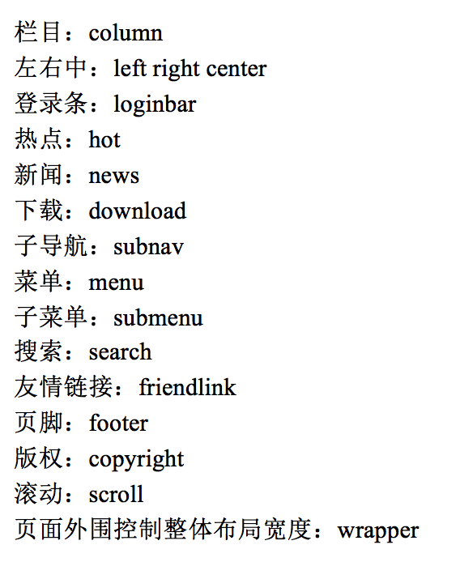
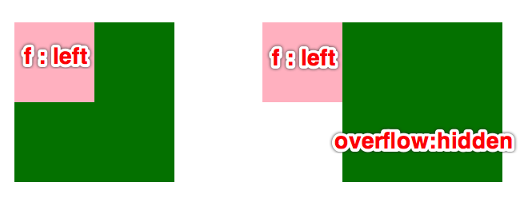
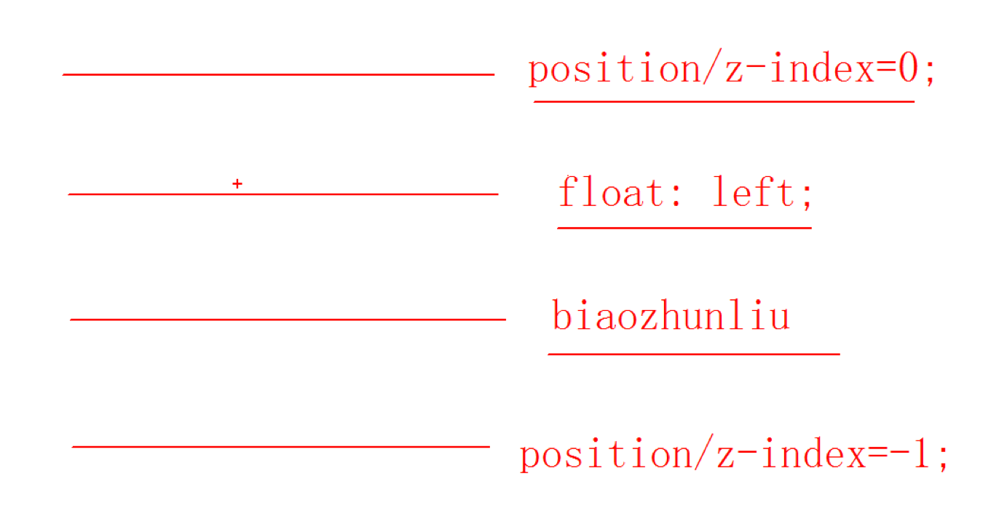
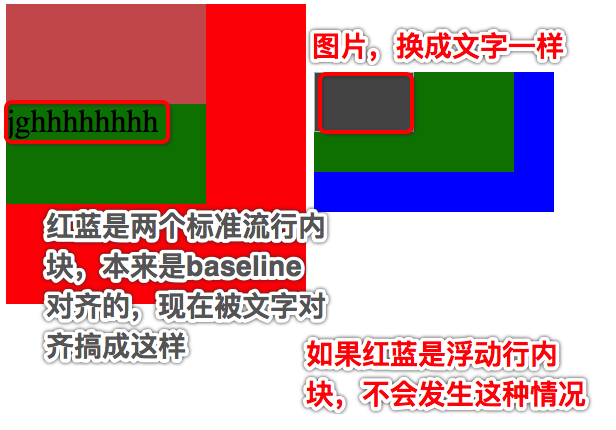
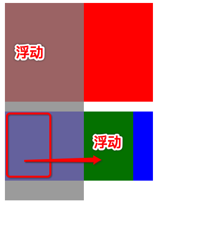

web的 衰落：
在web早期（1990-1993）,html是一个很局限的语言。几乎完全由用于描述段落，超链接，列表和标题的结构化元素组成。随着万维网的出现（用户交互体验的加强），对html的要求越来越大，人们迫切需要html增加新的元素，去完成一个特定的功能。
一片混乱：
迫于压力，html开始出现<font>，<i> , <s> 等标签。但是html是一种描述结构的语言，也开始描述外在表现了。
几年之后这种随便的做法暴露出严重的问题：1：由于html既写结构又写样式，导致页面缺乏结构性，降低了网页的可访问性。2：页面维护越来越困难
Css大救星：
当html中存斥着的表现标记问题，W3c并没有忽视。在1995年，w3c开始发布一种正在进行的计划（work-in-pr0gress） 称之为css。
与html相比，Css支持更丰富的文档外观，Css可以为任何元素的文本和背景设置颜色；允许在任何元素外围设置边框；允许改变文本的大小，装饰（如下划线），间隔，甚至可以确定是否显示文本。
HTML中设置的叫做标签属性，CSS中设置的叫做标签样式，这点需要区分开，DOM中操作标签属性和样式是明确分开的。
CSS通常称为CSS样式表或层叠样式表(Cascading Style Sheets)（级联样式表），主要用于设置HTML页面中的文本内容（字体、大小、对齐方式等）、图片的外形（宽高、边框样式、边距等）以及版面的布局等外观显示样式。
以HTML为基础，提供了丰富的功能，如字体、颜色、背景的控制及整体排版等，而且还可以针对不同的浏览器设置不同的样式。
CSS就是控制页面布局和样式，用来美化html标签的，相当于页面化妆。
<head>
<style type=”text/css”>
样式表写法
</style>
</head>
写在head里，<link rel="stylesheet" href=”1.css”>
行内样式表比如h标签，<h1 style="font-size:30px; color:red;"> 标题h1 </h1>
三种写法特点:内嵌式写法，样式只作用于当前文件，没有真正实现结构表现分离。
外链式写法，作用范围是当前站点，谁调用谁生效，范围广，真正实现结构表现分离。
行内样式表，作用范围仅限于当前标签，范围小，结构表现混在一起。 （不推荐使用）
注意：我们写css样式文件，分为：公共样式css文件以及特殊功能样式css文件。引进的时候，公共样式写在上面，特殊样式写在下面，因为CSS的层叠性。
选择器是一个选择谁（标签）的过程。（学CSS最重要的就是学习选择器）
实现CSS对HTML页面样式的控制，如果要让这些样式对HTML页面中的元素实现一对一，一对多或者多对一的控制，这就需要用到CSS选择器，HTML页面中的元素就是通过CSS选择器进行控制的。
选择器{属性:值； 属性:值;}
写样式的时候，大部分都是用类，极少的使用id。 不提倡用id 去写样式，因为他的权重太高。 Id 主要是为了js做准备。
语法：标签{属性：值;}
特点：标签选择器定义之后，会将页面所有的元素都执行这个标签样式。
写法
.自定义的类名{属性:值; 属性:值；}
特点： 谁调用，谁生效。
一个标签可以调用多个类选择器。 比如：<div class="box miss">调用多个类</div>
多个标签可以调用同一个类选择器。
类选择器命名规则
不能用纯数字或者数字开头来定义类名（不生效）
不能使用特殊符号或者特殊符号开头（_特殊，可以用）来定义类名
不建议使用汉字来定义类名（生效，只是不建议）
不推荐使用属性或者属性的值来定义类名
总结：最好用英文，而且最好能表达是适用在哪里的。
| 头 | header |  | |
| 内容 | content/container | ||
| 尾 | footer | ||
| 导航 | nav | ||
| 侧栏 | sidebar | ||
| 标志 | logo | ||
| 广告 | banner | ||
| 页面主体 | main | ||
| 并不是都以这个为标准，有些公司会有专门的命名规范文档，统一命名，方便维护。 | |||
写法
#自定义名称{属性:值;}
特点：
ID选择器和类选择器用法一样，区别是同一个HTML页面中不能有相同的ID名称(使用多个相同的ID选择器，浏览器不会报错但是不符合W3C标准了，所以ID选择器命名必须要唯一性)，经常配合JS使用，如果不唯一，JS调用会有问题。
一个标签只能有一个ID，如果id="" id=""，前设置的生效。且一个ID名称，在一个HTML页面中，只能被用一次。相当于人与身份证的关系，一一对应。
一个ID对应一个ID选择器，因为ID在一个HTML中是唯一的。所以一个标签也就只能调用一个ID选择器。对应的，一个ID选择器，也只能被调用一次
一个标签可以同时调用类选择器和ID选择器。
写法：
*{属性:值;}
特点：
给所有的标签都使用相同的样式。
★不推荐使用，初始化慢，浪费性能，增加浏览器和服务器负担。
p[title]{ } 所有p标签中，设置了title属性的都生效
p[title="xx"]{ } p标签中设置title=xx的生效
p[title="xx"][width]{ } 两个条件：设置title=xx,且设置了width属性的
概念：
两个或者两个以上的基础选择器通过不同的方式连接在一起。
写法：
标签+类/ID选择器{属性：值；}
特点：
即要满足使用了某个标签，还要满足使用了类（id）选择器。
选择器+空格+选择器{属性：值;}
解释说明：后代选择器用来选择元素或元素组的后代，其写法就是把外层标记写在前面，内层标记写在后面，中间用空格分隔。当标记发生嵌套时，内层标记就成为外层标记的后代。
后代选择器首先要满足包含（嵌套）关系 也就是前面的选择器包含后面的选择器。
定义的属性是生效在最后一级的选择器中。
父集元素在前边，子集元素在后边。
特点：无限制隔代，前后选择器中间可以有其他的选择器。
标签选择器、类选择器、ID选择器自由组合。
1.避免代码污染
因为我们遇到的最多的就是后代选择器，使用后代选择器的时候，注意不要牵扯到其他地方的代码。
比如：.box div ul li a { }。这种就很容易污染到其他地方的代码。因为其他地方也可能有这种嵌套。
这个时候可以改一下我们的类名，改成独特一点的。
轻易不要用base.css中的类选择器，来做后代选择器。base.css中的类选择器，很多地方会调用的
2.不要超过三层
一般我们的后代选择器不要超过三个，否则的话，当我们想要层叠这个样式，提高优先级的时候，就太困难了，你三个，层叠你，我得四个，然后五个。一般来说三个就行了，超过了4个就该ID选择器、!improtant 出场了
3.后代选择器大量出现的原因 — 优先级层叠
一旦出现第一个后代选择器，那么以后这个标签里层的子标签再调用的类控制器，为了提高控制器优先级，不被层叠掉，只能把它父标签对应的控制器加上形成后代选择器，以增加优先级
选择器复用1.内容一样 2. 标签的样式设置成一样 2.如果牵扯到需要设置父标签，那将父标签的一些属性也设置一样。
注意：
比如：加入已有模块，是调用的后代选择器： .nav-site ul . 第三步中，设置父标签样式一样时，别图简单，直接调用.nav-site。因为取名都有语义化的。自己再起个名，然后加上去，并集选择器。
写法：
选择器>选择器{属性:值;}
选中直接下一代元素。
写法：
选择器，.选择器，#选择器{属性:值;}
div+p: 兄弟选择器
div后面紧邻的第一个p，如果div span p 这个时候是不生效的
div~p: 兄弟选择器
div后面所有的兄弟p
CSS 伪类用于向某些选择器添加特殊的效果。
伪类的顺序：L-V-H-A(如果都写，务必按照顺序来写)
a:visited这个状态，界面刷新也会保持着，清了缓存就会变过来了
a:hover也可以看成一个类选择器，伪类，优先级算11，它里面的样式也是可以被层叠掉的
还有一种用法：鼠标放在div上的时候改变a连接的颜色，选择器写法：.box:hover a { }
文本修饰(常用属性)
超链接经常配合hover状态来设置的下划线属性
text-decoration: none | underline | line-through
在a:link，a:hover中对应设置
层叠性
当同一个（同一类）标签调用了多个选择器样式时，样式发生了冲突，总是执行后边的代码(后边代码层叠前边的代码)。和标签调用选择器的顺序没有关系。（这个层叠需要参考第三个特性，优先级）
继承性
继承性发生的前提是包含（嵌套关系）
总结：文字的所有属性都可以继承。
◆特殊情况：
h系列不能继承文字大小。(其实是继承了，但是浏览器内核给了h标签还有一个属性，比如h1, font-size = 2em，也就是是你继承的文字大小的2倍，h2 ,font-size = 1.5em)
a标签不能继承文字颜色。（浏览器内核，规定的就是超链接 color = blue）
优先级(通配符选择器仅大于继承样式，但是不推荐使用)
| 选择器 | 默认/继承样式 | 标签选择器 | 类选择器 | <"ID"选择器 | 行内样式 | <"!important"修饰符 |
|---|---|---|---|---|---|---|
| 权重 | 0 | 1 | 10 | 100 | 1000 | 1000以上 |
|
1.权重数字仅供参考，实际上100个标签选择器权重相加，也比不上一个类选择器。 2.通配符选择器的权重仅大于继承样式。 |
||||||
优先级特点
继承的权重为0，优先级最低。权重相同时，后面的生效
权重会叠加：这个是针对复合选择器来说的，以上面的权重数值来说
p.son{ } 权重为1+10 = 11
.father .son{ } 权重为10+10 = 20
#father .son{ } 权重为100+10 = 110
| 模块 | 规范 | 补充内容 |
|---|---|---|
| 文件 | css文件使用无BOM的UTF-8编码 | 这个BOM是：ByteOrderMark |
| 缩进 | 使用 4 个空格做为一个缩进层级 | 不允许使用 2 个空格 或 tab 字符 |
| 空格 | 选择器与 { 之间必须包含空格 |
.box(空格){ font:(空格)14px SimSun; } |
| 属性名与之后的 : 之间不允许包含空格， : 与属性值之间必须包含空格 |
||
| 列表型属性值书写在单行时， , 后必须跟一个空格。 | ||
| 选择器 | 注意类选择器的命名，根据语义化，用-连接，比如foot-top-slogen，另一方面也可防止重名，而造成代码污染。 | |
| 并集选择器：集体声明多个 selector 时，每个选择器声明必须独占一行。 | ||
| 后代选择器：嵌套层级应不大于 3 级，位置靠后的限定条件应尽可能精确。(层级多了，优先级太大，后面的样式不容易层叠) | ||
| >、+、~ 选择器的两边各保留一个空格。 | ||
| 属性 | 属性定义必须另起一行。 | |
| 属性定义后必须以分号结尾。 | ||
| 选择器中有定位的，建议先写定位样式，容易阅读 | ||
| 在可以使用缩写的情况下，尽量使用属性缩写。比如font:/background:/border:/padding:/margin:/色值#000等 | ||
| 颜色属性 |
RGB颜色值必须使用十六进制记号形式 #rrggbb 颜色值可以缩写时，必须使用缩写形式。 颜色值中的英文字符采用小写。如不用小写也需要保证同一项目内保持大小写一致。 | |
| 不允许使用 rgb() | ||
| 不允许使用命名色值(red,blue等) | ||
| 其他属性 | 文本内容：文本内容必须用双引号包围。 | |
| 数值：当数值为 0 - 1 之间的小数时，省略整数部分的0 ( .2 / .3)。 | ||
| 长度：长度为 0 时须省略单位。 (也只有长度单位可省) | ||
| url()：url() 函数中的路径不加引号。 | ||
| font-weight： font-weight 属性必须使用数值方式描述，不要用bold。 | ||
| z-index：层级(z-index)必须清晰明确，页面弹窗、气泡为最高级（最高级为999），不同弹窗气泡之间可在三位数之间调整； | ||
| 清除浮动 |
当元素需要撑起高度以包含内部的浮动元素时，通过对伪类设置 clear 或触发 BFC 的方式进行 clearfix。尽量不使用增加空标签的方式。 另需注意，对已经触发 BFC 的元素不需要再进行 clearfix。 |
|
| CSS检测地址：http://jigsaw.w3.org/css-validator/ | ||
| 属性 | 解释 | 补充 | |
|---|---|---|---|
| 标签通用属性 | Color : red; | 文字颜色 | |
| Background-color : red; | 背景颜色 | 可以用rgb()、rgba()、十六进制来表示 | |
| opacity | 标签透明度 | 注意：里面的内容也会变透明。 所以如果要透明背景，一般用上面的背景色，改变背景色的透明度 (IE8以前filter: alpha(opacity=xx)) |
|
| vertical-align | 设置标签垂直的对齐方式 | 默认是baseline,常用来设置图片和文字的垂直对齐。点击查看 | |
| cursor | 鼠标移动到标签上的显示图标 | pointer:小手；move:四角箭头； text:输入条光标；default:小白箭头； |
|
|
盒子模型属性
块、行内块元素都可以看做盒子 工作中用的最多的盒子就是div |
text-align : left | center| right | 内容的水平对齐方式 |
对图片和文字都适用 此外也可以通过margin、padding、定位实现内容居中 |
| text-indent : px、2em、%; | 内容首行缩进(不是标签本身缩进) | 对图片和文字都实用 行内元素的宽高是被内容撑开的，所以也就没法缩进 注意带单位：不管是em,还是px |
|
| Width:20px、em、%; | 宽 |
写的时候，注意写单位. 只有行高才有不带单位的那种表示方法 |
|
| Height:20px、em、%; | 高 | ||
| border边框 border-top|bottom|left|right 边框增大盒子大小 |
border-top-style边框线型 | solid实线、dotted点线、dashed虚线 | |
| border-top-color颜色 | 默认黑色 | ||
| border-top-width边框宽度 | 默认3px | ||
|
边框属性连写： border-top:red solid 6px 没有顺序要求，线型必写 border:red solid 6px. 四个边框设置一样时的简写。顺序没要求，线型必写 |
|||
| padding内边距 Padding-top|bottom|left|right 内边距撑大盒子 |
padding连写 上右下左，顺时针 Padding: 20px; 上右下左内边距都是20px Padding: 20px 30px; 上下20px 左右30px Padding: 20px 30px 40px; 上20px 左右30px 下40px Padding: 20px 30px 40px 50px; 上20px 右30px 下40px 左50px |
||
| margin外边距 margin-left|right|top|bottom |
margin连写:同内边距一模一样 上右下左，顺时针 margin: 0 auto 让盒子居中(text-align:center ，让标签内的内容居中) 外边距合并：两个盒子垂直一个设置上外边距，一个设置下外边距，取的设置较大的值。 外边距塌陷：给子盒子设置边距，子盒子和父盒子同时移动了，且相对不变 |
||
| border-collapse | 边框合并 | 设置为collapse，边框合并，一般用于<table>标签 | |
|
border-radius 单位：px、em、50%(宽高一半) |
边框圆角 |
border-radius: 左上|右上|右下|左下 四个值，只写一个表示四个值相同，都为此数值。 |
|
| overflow | 当内容超出盒子范围时 |
解决外边距塌陷问题。清楚浮动(不推荐) 点击查看 |
|
|
补充： 行内元素设置border/padding/margin： border会全生效，padding、margin只有左右生效，上下padding、margin会被忽略。 其实设置上下padding，也会有一点效果的，那就是背景色的高度会被撑开，但是丝毫不会影响到布局, 自身、兄弟盒子、父盒子还是在原有的位置 很好用的一个属性，早就感觉行内元素之间间隙加空格low了，span应该很经常用 |
|||
| 文本属性 | font-style:normal|italic; | 文字风格 | normal正常、italic斜体 |
| font-weight | 文字线条粗细 | 100-900，700相当于bold | |
| font-size:24px; | 文字大小 | ||
| line-height：px、2em、%、2 | 行高 |
对超链接也生效，常被用来设置文字和超链接垂直居中 点击查看详解 |
|
| font-family | 字体类型 | 常用：微软雅黑、宋体 | |
| 文本属性连写：font : italic 700 16px/40px 微软雅黑; | 1.必须按上面顺序 2.font-size、font-family必写 | ||
| 背景属性 | background-color | 背景颜色 | |
| background-image:url() | 背景图片 | ||
| background-repeat | 背景图片是否平铺 | repeat(默认平铺) | no-repeat| repeat-x | repeat-y | |
| background-position | 背景图片的位置 | left | right | center | top | bottom | |
| background-attachment | 背景是否滚动 | scroll | fixed | |
| 背景属性连写：background:red url() no-repeat 20px 30px scroll | 没有顺序要求 | ||
| 超链接属性 | text-decoration | 文本修饰 | none | underline | line-through |
| 列表属性 | list-style | 列表项目编号 | none去掉编号 |
| input控件属性 | border | 边框 | 默认自带边框，设置为"0 none"，去边框 |
| outline-style | 拥有键盘输入焦点时的轮廓线 | none，去掉蓝色轮廓线 | |
| input:focus{}表单控件在拥有键盘输入焦点的时候状态。补充： label for id 获取焦点 | |||
| textarea | resize | 右下角的拖拽放大缩小 | none- 禁止文本框拖拽 |
补充：
1. 文本属性，行高问题
同一个选择器，行高写在font:18px 宋体; 前。或者继承父元素的行高，然后自己设置font:18px 宋体;
行高设置不起作用，原因:连写font:18px 宋体;将行高层叠了(font连写，不写的属性，默认表示用默认的数值)
如果fontsize,fontfamily分开写，不连写，是不会有问题的
2. web开发中的单位 - px
移动端写布局都是考虑的屏幕的物理点位，因为手机的ppi相差很大，所以导致相同屏幕，分辨率也差很多，这时候，如果布局用px的话，那么一个相同的布局，在两个屏幕上的显示会差很多很多。而如果使用物理点位，就保证了布局一致
web中的单位px，其实底层是转换为了dip/dp，也就说与APP开发时是一样的
3. body默认宽高是0，有内容才会被撑起来有具体宽高
overflow 属性规定当内容溢出元素框时发生的事情。
scroll 会一直显示滚动条，而auto，只有当内容过多的时候才显示
overflow :hidden其他用途：
1. 解决外边距塌陷
2. 清除浮动(不推荐,因为超出的就不显示了，还是伪元素清除浮动)
3. 阻止文本饶图效果 点击查看详情
默认属性是:vertical-align:baseline;即同一行元素，默认底部对齐着。vertical-align对inline-block最敏感。也就是说一般用于行内块。
使用：vertical-align，设置元素的竖直上的坐标，y坐标对齐方式，iOS里也是老是混淆，vertical就理解为y轴、y坐标吧)
标签的这个属性，可以理解为，用自己身体的那个地方，跟同行的其他元素对齐。设置为middle，意思就是用自己的中部，跟同行的其他标签的底部(因为标签的这个属性，默认是baseline)对齐。
如果一行元素，四个行内块，设置一个为middle，就会发现这个元素的centerY跟其他三个的底部对齐
行内元素是以自己的底部跟其他元素的设置(baseline/bottom)对齐的。
行内块元素偶尔底部距离其他盒子(包括父盒子)会有3px的距离，通过设置vertical-align:bottom可以消除这3px.
font-size:16px; 文字大小
Font-weight: 700 ; 值从100-900，700约等于bold，文字粗细，不推荐使用font-weight:bold;
Font-family:微软雅黑; 文本的字体
Font-style: normal | italic; normal 默认值 italic 斜体
line-height: 行高 点击下面看行高详解
文本属性连写语法：
font: font-style font-weight font-size/line-height font-family;
比如：font:italic 700 16px/40px 微软雅黑;
注意：font:后边写属性的值。一定按照书写顺序（前面两个可以换，但是最好还是按照这个顺序。一旦写乱了，是不生效的）。
文本属性连写，文字大小和字体为必写项。
当行内元素，继承了父标签(不管是行内元素还是块元素)的行高，然后在自己的选择器中又单设置了font-family为黑体或者宋体，行高会加一
文字的表达方式最常用的宋体、微软雅黑，顶多再加个黑体
1.直接写中文名称。
2.写字体的英文名称。
3.unicode 编码
比如：宋体：Arial, Verdana, "\5b8b\4f53”都是宋体。以后讲到Unicode事细说
谷歌不支持12号以下的字体最小12号
| 字体名称 | 英文名称 | Unicode编码 |
|---|---|---|
| 宋体 | SimSun | \5B8B\4F53 |
| 微软雅黑 | microsoft yahei | \5FAE\8F6F\96C5\9ED1 |
| 黑体 | SimHei | \9ED1\4F53 |
| 新宋体 | NSimSun | \65B0\5B8B\4F53 |
| 楷体_GB2312 | KaiTi_GB2312 | \6977\4F53_GB2312 |
| 隶书 | LiSu | \96B6\4E66 |
| 幼圆 | YouYuan | \5E7C\5706 |
| 华文细黑 | STXihei | \534E\6587\7EC6\9ED1 |
| 细明体 | MingLiU | \7EC6\660E\4F53 |
| 新细明体 | PMingLiU | \65B0\7EC6\660E\4F53 |
或者：
第一步：f12/打开代码审查
第二步：找到console
第三步：输入escape(“宋体”) 注意英文的括号和双引号。
浏览器默认为文字大小
浏览器默认文字大小：16px
行高的标准定义：是基线与基线之间的距离
行高的表现：行高=文字高度+上下边距。决定了上下边距,一行文字行高和父元素高度一致的时候，垂直居中显示。
首行缩进 text-indent 的单位：em，%，px，不支持行高那样直接写数值比如：2 ，3
px，是固定的数值，下面继承的子元素也是这个数值，不必多说
%，当前标签宽度的百分比，下面继承的是算出来的数值
em，当前标签内一个文字的大小，下面继承的是数值
行高有四个单位：em，%，px，数字2，3。前三个同上，第四个多出来的，也是不一样的
2，当前文字大小* 2，下面继承的是这个比例2，而不是具体行高数值。也就是说子元素的行高 = 2 * 子元素的文字大小
推荐使用像素作为单位
属性：
background-color 背景颜色
background-image 背景图片
background-repeat repeat(默认平铺) | no-repeat | repeat-x | repeat-y 背景平铺
background-position left|right|center|top|bottom 背景定位（背景图片不平铺的时候，背景图片从标签的哪个位置开始铺展开。换句话说就是背景图片的左上角在标签中的坐标点）
方位值只写一个的时候，另外一个值默认居中。
比如：background-position: right;
写2个方位值的时候，顺序没有要求。
比如：background-position: right bottom;
写2个具体数值的时候，第一个值代表水平方向，第二个值代表垂直方向。
比如：background-position:20px 30px;
background-attachment 背景是否滚动 scroll | fixed
scroll，表示，前面的坐标，是在设置背景图片在这个标签上的位置
fixed，表示，前面的坐标，是在设置图片在这个浏览器显示页面上的位置
注意：
1.如果是fixed，且设置的right，而标签本身没这么宽，那么这个背景图片是看不见的
2.因为坐标是设置的在图片在浏览器显示页面上的位置，那么即使这个标签很长，能够一直滚动，那么也是一直能看见的(参考scrollview理解，fixed相当于加在了scrollview.frame上，而不是contentsize上。scroll相当于加到了scrollview里面的标签上)
背景属性连写
语法：
background: red url("..") no-repeat 30px 40px scroll;
连写的时候没有顺序要求。
1.直接写颜色的名称
2.十六进制显示颜色(常用): 0-9 a-f
1.前2为代表红色，中间2位代表绿色，后边2位代表蓝色。
2.#000000是黑色，#ffffff 是白色，三对数值一样的是灰色
3.如果6个数值一样，写三个就行了，#fff,#000。iOS中那个色值工具类不行，不支持
windows系统里有个软件fireworks可以吸取颜色，Mac系统有自带的工具
3.rgb
语法：color：rgb(120,120,120);
4.rgba A代表alpha 不透明度 值 0-1
语法：color：gbga(120,120,120,0.5)
典型代表,Div，h1-h6，p，form，ul，li，address，blockquote，table
特点:
独占一行
可以设置宽高
嵌套（包含）下，子块元素如果没有定义宽高，宽度继承父元素宽度(不脱标的盒子才能继承)。高度自己设置，不设置为0
典型代表 span，a，strong ， em， del， ins，br，label
特点：
在一行上显示
不能直接设置宽高
元素的宽和高就是内容撑开的宽高，跟父元素的宽高没关系。
严格来说，是没有这个分类的，明确分类只有块元素和行内元素，这个是便于理解，总结出来的。是转换的（那个老师说的，记录）
典型代表 input，img
特点：
在一行上显示
可以设置宽高
块元素转行内元素
display:inline;
比如：
div,p{
display: inline;
}
行内元素转块元素
display:block;
比如：
span{
display:block
}
块和行内元素转行内块元素（最、很常用）
display:inline-block;
比如：
div,a,span,strong{
display: inline-block;
width:200px;
height:200px;
}
一旦转化，原先的特性就没了
补充：行内块盒子
左右：与行内块/行内标签 有3px的距离。设置左/右margin = -3；可以消除。
底部：与其他盒子(包括父盒子)有3px的距离，这个可以通过设置vertical-align: bottom；来消除。（这个偶尔会没有，不晓得咋回事）
行内元素：
左右：与行内块/行内标签 有3px的距离。
所谓盒子模型就是把HTML页面中的元素看作是一个矩形的盒子，也就是一个盛装内容的容器。每个矩形都由元素的内容、内边距（padding）、边框（border）和外边距（margin）组成。
块元素、行内块元素都是盒子。
css中盒子模型由三部分组成: 1边框（border） 2 内边距（padding） 3外边距（margin）
影响盒子宽度的因素
内边距影响盒子的宽度
边框影响盒子的宽度
盒子的宽度=定义的宽度+边框宽度+左右内边距(margin也是盒子的一部分，但是它不影响盒子宽高，不显示盒子背景色/图片)
继承的盒子一般不会被撑大
包含（嵌套）的盒子，如果子盒子没有定义宽度，那么继承父盒子的宽度，此时给子盒子设置左右内边距，只要设置的内边距不大于父盒子的宽度，就撑大盒子。(这个必须理解，用到的地方不少)
因为高度是不继承的，所以设置上下内边距，是可以任意撑大的。
父盒子在定义宽高的情况下，是不会被子盒子padding/margin撑大的。
如果没说定义宽高的时候，那么padding和margin都会撑大父盒子。
border:border-width border-style border-color
边框属性
Border-style: solid 实线 dotted 点线 dashed 虚线
Border-color 边框颜色
Border-width 边框粗细
边框属性的连写：border-top|bottom|left|right : red 1px solid;
特点：没有顺序要求，线型为必写项。颜色默认黑色，宽度默认3px
四个边框值相同的写法：border: red 1px solid;
特点：没有顺序要求，线型为必写项。
边框合并
border-collapse:collapse;
table{
border-collapse:collapse;
}
Padding-top | bottom | left | right
padding连写
Padding: 20px; 上右下左内边距都是20px
Padding: 20px 30px; 上下20px 左右30px
Padding: 20px 30px 40px; 上内边距为20px 左右内边距为30px 下内边距为40
Padding: 20px 30px 40px 50px; 上20px 右30px 下40px 左 50px
外边距概述：
margin是指：
该盒子四边相邻的盒子，距离该盒子上右下左四条边的距离。
如果相邻盒子本身就已经有了间隔，margin的设置，我们可以理解为将间距增大或者减小多少px
如果是行内块元素设置了上下margin，会将这一行的高度撑高，见图
margin-top | bottom | left | right
外边距连写
Margin: 20px; 上下左右外边距20PX
Margin: 20px 30px; 上下20px 左右30px
Margin: 20px 30px 40px; 上20px 左右30px 下 40px
Margin: 20px 30px 40px 50px; 上20px 右30px 下40px 左50px
margin: 0 auto 让盒子居中(text-align:center ，让标签内的内容居中)
auto属性：
left:auto将盒子推向右边。right:auto将盒子推向左边。左右都用，让盒子居中。但是如果盒子脱标了，这个auto就不起作用了，必须得设置具体的数值，来调整盒子位置了
垂直方向外边距合并
简单地说，外边距合并指的是，当两个垂直外边距相遇时，它们将形成一个外边距。合并后的外边距的高度等于两个发生合并的外边距的高度中的较大者。
当一个元素出现在另一个元素上面时，第一个元素的下外边距与第二个元素的上外边距会发生合并。
边距合并问题只发生在块级元素之间
嵌套的盒子外边距塌陷
给子盒子设置边距，子盒子和父盒子同时移动了，且相对不变
解决方法: 1.给父盒子设置边框(不太推荐使用)
2.给父盒子overflow:hidden; 原理：overflow触发了bfc，格式化上下文。bfc(block formatting context)：成立了一个bfc独立渲染区域，在这个区域内，自成一个风格，不受外部影响(面试用)(说到这一步就行了，再往里就涉及css设计原理了)
bfc详解：http://www.w3cplus.com/css/understanding-bfc-and-margin-collapse.html
行内元素有上右下左的padding，有左右的margin，上下margin会被忽略。
新建文件 ctrl+n
打开文件 ctrl+o
调出和隐藏标尺 ctrl+r
清除辅助线： 视图---辅助线----清除辅助线
放大镜 z 放大镜状态下alt+鼠标左键 缩小
抓手 快捷键 空格
V 切换黑鼠标
U 画图
K 切片
I 吸色
空格 移动
测量距离
先拉出2根辅助线
切换到指针工具
将光标放到2根辅助线之间，按住shift键
补充
放大的只是我们看的视图，不管怎么放大缩小，测量的距离是不变的额
firework小技巧，右下角图层选项里，点击选中位图，点击位图选项上面，上个锁，防止在放大测量过程中，图片被拖动
在我们工作中，一般需要美工给我们一张psd图，用fireworks打开，点击每个元素，在属性栏中会显示有详细全面的美图标注的属性。
网页布局，也有人称网页重构、CSS+div。有一种很极端的人，使用css+div技术时，绝大多数部分都用div，超链接都用div+js来做，有这种人存在…
三大布局技术：文档流(标准流) 默认的、浮动布局、定位布局
元素自上而下，自左而右，块元素独占一行，行内元素在一行上显示，碰到父集元素的边框换行。
float: left | right
特点：
★元素浮动之后不占据原来的位置（脱离标准流，脱标）
本来是xy二维布局，浮动，相当于改变了Z轴坐标。
不占据本来的位置了，标准流里的元素，会重新排序，排在下面。但是需要注意：浏览器内核是不会让标签内容之间覆盖的，意思也就是，下面的元素会避开浮动布局的元素，在它的后面显示，这也就是应用1：文字饶图的原理。
★浮动的盒子在一行上显示
★行内元素浮动之后转换为行内块元素。（不推荐使用，转行内元素最好使用display: inline-block;）
总结：
比display：inline-block 强大的两点：
1. 可以从右向左布局
2. 文字饶图，是行内块做不到的
浮动的作用
文本绕图
制作导航
网页布局
overflow:hidden设置阻止文本饶图效果：当A盒子设置float：left后，下面的B盒子上移，但是B盒子设置了overflow：hidden之后，B与A盒子左右相邻，各不干涉。
当父盒子没有定义高度，嵌套的盒子浮动之后，子盒子因为浮动，会正常显示，但是父盒子下边的元素就会发生位置错误。
清除浮动不是不用浮动，是清除浮动产生的不利影响。
清除浮动的方法
clear: left | right | both 让左右抗拒浮动（工作里用的最多的是clear:both）
1. 额外标签法(不推荐使用，因为浮动太多，需要加的额外标签太多)
在最后一个浮动元素后添加标签,style = "clear:both"。
2. 给父集元素使用overflow:hidden; （不推荐） bfc
如果有内容出了盒子，不能使用这个方法。超出部分就不显示了。
3. 单伪元素清除浮动
.clearfix:after {
content: ".";
display: block;
height: 0px;
line-height: 0px;
visibility: hidden;
clear: both;
}
/*兼容ie浏览器*/
.clearfix {
zoom: 1;
}
4.双伪元素清除浮动(用的居多，新网站都开始用这个)
.clearfix:before, .clearfix:after {
content: "";
display: table;
}
.clearfix:after {
clear: both;
}
.clearfix {
*zoom: 1; /* IE/7/6 */
}
.clearfix一般都叫这个名字，语义化
:after 尾部
visibility: hidden 隐藏
*zoom：1 兼容IE浏览器，前面的*可写可不写
content：可以是. , 也可以是"" , 也可以是" " ，两种(不过反正也看不见~)
position： 定位，前面讲到背景图片定位，这里讲元素定位，都很重要，特别是后面的精灵图
定位方向: left|right|top|bottom，单位：em、px、%
注意：设置了定位不给left/top，会出现bug
定位的盒子，left比right的权限高，top高于bottom。left:0 ,right:0，盒子是在左边的
position:static;
静态定位。默认值，就是文档流。是不会动的，设置left、right….也不会动
Position:absolute;
特点：
★元素使用绝对定位之后不占据原来的位置（脱标）
★元素使用绝对定位，位置是从浏览器出发。
★嵌套的盒子，父盒子没有使用定位，子盒子绝对定位，子盒子位置是从浏览器出发。
★嵌套的盒子，父盒子使用定位，子盒子绝对定位，子盒子位置是从父元素位置出发。
★给行内元素使用绝对定位之后，转换为行内块。（不推荐使用，推荐使用display:inline-block;）
注意：如果父盒子有margin和border，padding，子盒子定位是以父盒子border内侧(也可以说是padding外侧)为基准的。
Position: relative;
特点：
★使用相对定位，位置从自身出发。
★还占据原来的位置。(就算position设置，移动了很多，原本的位置还是留在那里的，空白着)
★子绝父相（父元素相对定位，子元素绝对定位）(工作中基本上都是用这个，至于为什么不用子绝父绝，担心父盒子绝对定位，脱标之后，会被其他的元素顶上来，造成布局混乱。尽量不要让元素脱标)
★行内元素使用相对定位不能转行内块
Position:fixed;
特点：
★固定定位之后，不占据原来的位置（脱标）
★元素使用固定定位之后，位置从浏览器出发。
★元素使用固定定位之后，会转化为行内块（不推荐，推荐使用display:inline-block;）
脱标：浮动布局、绝对定位、固定定位都脱标，但是有所区别(static/relative不脱标，不转行内块)
位置：
虽然是浮在上面，但是是浮在html里的，还都是加在html页面上的。scrollview.contentview
坐标：
另外绝对定位，老师说是从浏览器出发，其实不太精确，可以说是从整个html网页(0,0)点出发。
设置left、top是设置离html页面(0,0)点的距离。
而设置right、bottom，则是设置的是离浏览器窗口的距离。比如bottom：10px，那么它的下面则是浏览器窗口的高度-10px;
如果这个元素的距离html顶部的距离都已经大于浏览器窗口高度了，那这个时候就不能设置right、bottom了，或者设置bottom ：-200px??
位置：
脱标是浮在浏览器窗口上的，我们可以认为是加在scrollview.frame上的。
坐标：
位置是从浏览器窗口(0,0)点出发的
注意：
前者只有当位于盒子内部时，我们才能看见。后者只有设置的坐标不大于浏览器窗口的宽高我们才能看见。如果设置top = 1200px，大于了浏览器窗口，那么即使整个html界面有2000px长，这个fixed定位的盒子，还是看不见
总结：相对定位，任何时候都是从自身位置出发的
固定定位，任何时候都是从浏览器窗口(不是body)出发的
绝对定位：
如果父盒子绝对定位，那么子盒子绝对定位是从父盒子位置出发的
如果父盒子相对定位，那么子盒子绝对定位是从父盒子位置出发的
如果父盒子固定定位，那么子盒子绝对定位是从父盒子位置出发的
如果子盒子是绝对定位，父盒子没有定位，那就找爷爷盒子，然后找祖爷爷盒子，一直向上依次寻找，直到找到一个有定位的，然后参考上面三条规则。如果连body了都没有定位，那么这个盒子就以html(0,0)为基准来定位。
注意：html(0,0)跟以body为基准是不一样的，html(0,0) = body去掉8px margin之后的大小
注意：如果父盒子有margin和border，padding，子盒子定位是以父盒子border内侧(也可以说是padding外侧)为基准的。
应用：★子绝父相（父元素相对定位，子元素绝对定位。原因也是尽量规避脱标）
工作中用到的最多的就是这个。
语法：
.father{
margin: 0 auto; // 用其他的方式，定位好自己这个标签
position: relative; //设置相对定位，但是不设置left/right/top/bottom 数值，也就不会移动
}
.son{
position: absolute;
left: xx px;
top:xx px;
}
工作中大多是这种模式。
但是如果父盒子，也需要用到绝对定位，那也就只能用子绝父绝了。这种也没什么，只不过偶尔需要留意清除浮动。
前端是在浏览器窗口上显示。
1. 浏览器的窗口可以随意改变大小(完美适配，那窗口很小时，内容肯定就无法显示)
2. 一张网页那么多元素(很耗时耗力)
这两个原因导致，在网页上使用iOS的完美适配—设置比例，是不可能实现的。
所以在前端中，我们必须使用标准流、浮动、定位三大布局技术特性，让盒子按照html规定的盒子排列规则，进行排列。然后设置盒子的坐标宽高、内容。从而达到效果。
层级问题（谁高）
定位的盒子(除去static) > 浮动的盒子 > 标准流的盒子(盒子层级与占不占位置无关)
同为标准流、浮动、定位的盒子，从左向右，从上到下的层级越来越高。（左右/上下两个盒子重合，重合部分看到的是右/下边的）
z-index用法：
1、必须有定位。（除去static之外，不搭配定位，无效）。
2、给定z-index的值为层级的值。（不给默认为0，不取小数）
浮动没有标准流里文字层级高，浮动盒子压不住标准流的内容
分为：标准流行内块(display:inline-block;或者input、img)、浮动行内块
行元素盒子变为行内块，在同行展示的时候，老师一般用float:left用浮动，而不是display:inline-block，顶部对齐比较符合我们的布局。
Ⅰ.标准流行内块之间标准流行内块，同行排列（display: inline-block 转成的行内块，或者img/input本身就是的行内块）
Y值
标准流的行内块，底部baseline排列对齐
X值
如果一行盛不下：被挤下来的那个盒子，肯定是重开一行，从左到位重新开始排列 — 标准流的做法。
Ⅱ.浮动行内块之间浮动转成的行内块，同行排列
Y值
浮动转成的行内块，顶部对齐排列
X值
如果一行撑不下：被挤下来的那个盒子，不能与左边紧邻的盒子顶部对齐，就会用自己的顶部与左边紧邻的那个盒子的底部对齐，Y坐标已定，至于X坐标，能多靠左就多靠左
如果被挤下来的那个是float：right的盒子，那Y值照样是与紧邻的左边的盒子底部对齐，X左边是能多靠右就多靠右
Ⅲ.浮动与标准流行内块之间浮动的行内块与标准流的行内块，同行排列
Y值
浮动行内块跑到最左边，除了占个位置，就当它不存在。然后标准流行内块从左到右开始baseline对齐排列。
X值
那说来就很复杂了，如下：下面都是一行时候排列，至于不一行，也懒得研究了。反正同一个盒子内的盒子要么浮动，要么都别浮动。
下面是几个情形：
1块（里面可以有任意内容）
2块（里面可以有任意内容）
上面的盒子设置浮动，下面的盒子会顶上去，被1盖在下面。但是2内的内容：行内块，行内元素，都会在1的最右边开始显示，也就是看起来1好像变成了2里面的一个最左边的行内块 (文本饶图的原理)。
注意：如果2盒子没有1大，那么2的所有内容，都会被挤到1盒子的bottom下面。如果下面有内容，那就盖上了，重叠显示
下面的设置浮动，两个盒子相对位置不变
12行内块
3块
1盒子浮动之后，三个盒子位置不变
2盒子浮动之后，1、2交换位置
12盒子都浮动之后，3盒子顶上去了。同第一种那种情况了。
1块
2行内块
上面的盒子设置浮动，下面的盒子会移动到上方，盒子的右边
1块
23行内块
1设置浮动，23移动到1的右边
由上面可知：
1. 浮动与不浮动盒子之间的关系非常复杂，所以一个盒子里的元素，要么都浮动，要么都别浮动。
2. 浮动的盒子虽说脱标，不占据原来的位置，但是从上面的几种情形来说，好像只有第一种情况，才能说不占据原来的位置，即使如此，顶上去的盒子，内容还被迫做出了调整。说到底还是在占地方。所以有人也叫半脱标。(浮动的盒子是不会盖住内容的)
至于定位就简单多了，一定位，盒子脱标了，就是在最上面。我原先的地方，你们虽然拿出用，一点不用顾忌，一点不占地方。当然下面的东西被遮住了，它也是不管的。被遮住就看不见
同一行的内容，默认是baseline对齐的，不管是不是在同一个盒子里
如图：
如果红蓝是浮动的行内块不会这样，还是保持顶对齐
浮动的盒子会影响到其他的浮动盒子，不管是不是在同一个盒子里
如图:
 如果盒子因为需求，必须要超出自己的父盒子，那就不要浮动了，直接添加就行了。如果层级不够，用定位来提高。(浮动的盒子不要超出父盒子)
最外层的盒子如果不设置宽度，就继承body的宽度，body继承的是浏览器窗口的宽度。
如果不设置宽度。当缩小浏览器窗口的时候。盒子宽度变小，里面的行内(不管是定位变的，还是浮动变的，还是display：inline-block变的)盒子就会掉下来，本来是一行排列，变成两行排列
里层盒子的坐标宽高设置宽高剩余法(设置宽高数值，用不完的剩余着，盒子稳定性最高)(一般最外层盒子、大盒子肯定需要设置宽高)
大盒子，或者UI标注图上明确标注了模块的宽高，那就用宽高剩余法设置，内外边距再用padding、margin设置，注意padding会撑大盒子，最终宽度要减去padding。
padding（在小标签中用的很多）
如果标签没有标注宽高，只标注了上下左右间距，推荐使用padding来设置。
margin
当点击超链接空白处，文字不变色，那么这个时候这个空白就不能设置padding了，只能设置margin了。(用的时候，注意避免外边距塌陷)
注意：
margin也是标签的一部分，只是不响应点击，不受背景色、背景图片影响，但它是真是存在的一片空白，如果层级造成，下面的超链接，被上层级的margin挡住，那么超链接也是不能点击的
为了考虑到浏览器的兼容问题，其实不同浏览器对有些标签的默认值是不同的，如果没对CSS初始化往往会出现浏览器之间的页面差异 挑取自己有用的就行
常见的初始化操作body默认margin为8，同iOS
将body，ul，li的margin 和padding 去掉
将li的liststyle 去掉
Img在IE 老版本中会渲染带上边框，border等于0
腾讯：
body,ol,ul,h1,h2,h3,h4,h5,h6,p,th,td,dl,dd,form,fieldset,legend,input,textarea,select{margin:0;padding:0}
body{font:12px"宋体","Arial Narrow",HELVETICA;background:#fff;-webkit-text-size-adjust:100%;}
a{color:#2d374b;text-decoration:none}
a:hover{color:#cd0200;text-decoration:underline}
em{font-style:normal}
li{list-style:none}
img{border:0;vertical-align:middle}
table{border-collapse:collapse;border-spacing:0}
p{word-wrap:break-word}
新浪：
body,ul,ol,li,p,h1,h2,h3,h4,h5,h6,form,fieldset,table,td,img,div{margin:0;padding:0;border:0;}
body{background:#fff;color:#333;font-size:12px; margin-top:5px;font-family:"SimSun","宋体","Arial Narrow";}
ul,ol{list-style-type:none;}
select,input,img,select{vertical-align:middle;}
a{text-decoration:none;}
a:link{color:#009;}
a:visited{color:#800080;}
a:hover,a:active,a:focus{color:#c00;text-decoration:underline;}
淘宝：
body, h1, h2, h3, h4, h5, h6, hr, p, blockquote, dl, dt, dd, ul, ol, li, pre, form, fieldset, legend, button, input, textarea, th, td { margin:0; padding:0; }
body, button, input, select, textarea { font:12px/1.5tahoma, arial, \5b8b\4f53; }
h1, h2, h3, h4, h5, h6{ font-size:100%; }
address, cite, dfn, em, var { font-style:normal; }
code, kbd, pre, samp { font-family:couriernew, courier, monospace; }
small{ font-size:12px; }
ul, ol { list-style:none; }
a { text-decoration:none; }
a:hover { text-decoration:underline; }
sup { vertical-align:text-top; }
sub{ vertical-align:text-bottom; }
legend { color:#000; }
fieldset, img { border:0; }
button, input, select, textarea { font-size:100%; }
table { border-collapse:collapse; border-spacing:0; }
margin:0 auto; 只能让标准流的盒子居中对齐。
定位的盒子居中：先左右走父元素盒子的一半50%，在向左走子盒子的一半(margin-left:负值。)
语法：
.centerBox {
position: absolute;
left:50%;
margin-left:负值(本身宽度的一半);
}
div可以包含所有的标签。
tr、li、dd里可以包含文档流
h1可以包含p，div等标签。
p标签不能包含div h1等标签。
P、h标签里可以包含其他的行内元素
行内元素尽量包含行内元素，行内元素不要包含块元素。
从图中发现：正规的规范里只有行内元素和块元素，行内块元素只是便于理解，自己搞出来的一个名词。
由于浮动，定位都脱离了标准流，会对网页布局造成一定的影响
尽量使用标准流。
标准流解决不了的使用浮动。
浮动解决不了的使用定位。
margin-left:auto;使图片冲到最右边
margin-right:auto;使图片冲到最左边
margin: 0 auto;使图片居中
overflow:hidden; 隐藏溢出的那部分
visibility:hidden; 隐藏元素 隐藏之后还占据原来的位置。
display:none/block; 隐藏/显示元素 隐藏之后不占据原来的位置，常配合js使用。
opacity: 0; 隐藏盒子，而且占位置。
Position/top/left/...-999px 隐藏盒子，不占位置。
或者用margin-left设置为负值也行
使用text-indent:-5000em;
display:inline-block;
text-indent:-5000em;
注意：设置em,当大于7位数，设置px,当大于8位数。会出现bug，页面中的超链接不能被点击
将元素高度设置为0,使用内边距将盒子撑开，给盒子使用overflow:hidden;将文字隐藏。
height:0px;
padding-top:100px;
overflow:hidden;
来源
当用户访问一个网站时，需要向服务器发送请求，网页上的每张图像都要经过一次请求才能展现给用户。
然而，一个网页中往往会应用很多小的背景图像作为修饰，当网页中的图像过多时，服务器就会频繁地接受和发送请求，这将大大降低页面的加载速度。为了有效地减少服务器接受和发送请求的次数，提高页面的加载速度，出现了CSS精灵技术（也称CSS Sprites）。
简单地说，CSS精灵是一种处理网页背景图像的方式。它将一个页面涉及到的所有零星背景图像都集中到一张大图中去，然后将大图应用于网页，这样，当用户访问该页面时，只需向服务发送一次请求，网页中的背景图像即可全部展示出来。通常情况下，这个由很多小的背景图像合成的大图被称为精灵图，比如下面的淘宝的
工作原理
CSS 精灵其实是将网页中的一些背景图像整合到一张大图中（精灵图）。然而，各个网页元素通常只需要精灵图中不同位置的某个小图，要想精确定位到精灵图中的某个小图，就需要使用CSS的background-image、background-repeat和background-position属性进行背景定位，其中最关键的是使用background-position属性精确地定位。
使用方法
精灵图向左向上为负，深入第四坐标系为正值。scrollview向左向上偏移为正，深入第二坐标系为正。
精灵图用firework，只能用打开的方式，不能使用导入得方式打开
firework图片为了获取坐标，可以右键通过剪切新建图层，然后就会精准选中，显示精准坐标。
但是这个时候，有个问题，此时这个图片会被移到了一个新建的图层上，是不能被选中复制粘贴不了的，在工具栏--窗口--图层，选中它的图层，再复制粘贴
实际应用中，精灵图的一个实用技巧：
首先，使用一张精灵图的标签，类里都包含一个特有的子串，比如：icon
然后，属性检查器，［class ^= icon］ {background: url}
最后，我们在各自的标签中设置背景时，直接改变background-position
制作精灵图
新建文件，背景记得选择透明色
一般都靠一边排序
为了节省画布大小，排的密一点，但不要太密
导出没有png就选另存为，说是因为png支持透明背景(拼合png说是跟png差不多)
新建文件
h5的兼容(h5格式，是向下版本兼容的)
不写后缀名
可以直接右击，新建文件，也可以在本地新建文档，重命名比如index.html
没有虚拟文件夹的说法，webstrom中可以直接创建实体文件夹，文件夹内新建文件夹，web中会自动显示出来，不用拖动
文件编码格式
webstrom右下角会有文件编码显示，默认GBK，去设置 --编辑器--文件编码，
project encoding 改为utf8
底部默认文件编码 选为utf8
颜色设置
在我们设置颜色之后，在最左边的边栏里，先有个小正方形显示我们设置的颜色，那个是能点击的，进去之后可以选取颜色
webs出现乱码，设置，外观，文字默认文字选择了不支持汉字的语言类型，默认微软雅黑就行
webs支持五大浏览器，谷歌，欧朋，ie，火狐，苹果直接打开 (当然mac没有IE)
webs支持ememt语法(应该是内置ememt插件)
火狐有两个插件：1.吸色 2.截屏(全网页截屏、可视区域截屏、网页选中区域截屏、屏幕选中区域截屏)，截屏插件的名字好像就叫网页截屏
项目搭建(原则：结构样式行为分离)：各一个文件夹
| html | 核心文件 | index.html（主页面，取名，语义化。可以将index.html放在所有文件夹外面） |
| css | 控制样式 | css文件可以分为通用模块(可以取名叫base.css基础样式、global。css全局样式、public)，特定功能模块 |
| image | 图片 | |
| js | js文件，音视频 |
行内人有个叫法：站点。
站点 == 项目 == 项目文件夹 == （根目录）
图标和图片不一样，格式都不一样.ico
1.网页title前面的icon图标
2.更换桌面文件夹图标：文件夹右键自定义里可以自定义文件夹的图标，但是只识别图标，不识别图片
3.应用程序图标也可以右键更换
获取1.网站名(带www.)/favicon.ico，比如：www.taobao.com/favicon.ico 获取网站的title前面的icon
2.图片如果很小，可以通过改变后缀名，来改成图标
3.bitbug.net在线制作ico图标（补充一下：Placehold.it制作占位符网站，可以通过改url里的参数定制图片的大小、内容）
favicon.ico图标favicon.ico一般也放在文件夹外，与index.html同级
写法：
link rel="shortcut icon" href="favicon.ico"/> //shortcut可写可不写
css可抽取的类也不算多，京东也就抽了几个，其他的样式，不怎么通用的也没必要写在公共初始化里，增加类选择器了
京东这个以后可以直接拿来用，很通用：jdcssinit.text
写网页跟开发ios差不多，第一步，也是最重要的一步，解剖分析页面布局
1. 通栏和版心两个说法，版心是盒子设置居中(按照新浪的做法：通栏和版心都是固定宽高居中的，拉伸和缩小浏览器窗口的时候，只是改变的版心两边的空白处)
2.从上往下，每一行都是个通栏或者版心盒子，然后在里面从左到右，对行内块盒子排列布局。(从左往右的盒子，感觉明明可以转行内块排列，但是老师都是用float：left，不晓得为啥)
3.根据内容有无关联，内容一致性，决定相邻的内容要不要放在一个盒子里。很多盒子同级排列布局的时候，最好别脱标，偶尔几个还行，多了就很麻烦。
先做普通的标签，再做有点复杂的标签，再做更复杂的标签，一步一步来，先把框架搞出来，再给一些特别的部分加一些东西。
京东右上角，先做出一个纯字体的ul标签，再给一些li加东西(加三角)，再加手机图标
先框架再补充，三层蛋糕模型
以表的形式存在的或者好几个超链接、图片是并列等级水平、垂直排列的，都建议用ul、table等语义化标签。而table标签一般用来盛放文字。
功能性不强的模块(至于判断功能强不强，就是看承载的业务量以及是否是重要板块，用户的点击量)，简单来做，比如京东搜索框下面那个，可以用ul>li>a，来做，但是没必要，费时费力，直接用a就行
实际开发小标签的使用小标签应用的还挺多的，因为没大标签那么多属性，加载快一点。在一些不需要语义化的地方，用小标签s i em盛放一些小东西、小图片，
注意：
我们要在css初始化的时候，将这些小标签的一些特殊样式，比如加粗，倾斜，删除线，去掉
语法：
s, i, em { //s删除线、i/em斜体
font-style: normal;
text-decoration: none;
}
应用场景：
如果出现图文混排，几个字和一张小图标一体，我们一般用定位来解决这个图片。使用文档流当然也能，但是相对来说定位简单。
表，根据标签语义化，建议使用ul,table标签来做，但是table一般都是盛放文字的，所以这里用ul来做。
这个表格的一个技术点：让一行显示四个li，设置ul的宽度>四个li的宽度，小于五个li的宽度。
经常出现的问题：优先级问题
当我们设置的属性，优先级不够的时候，在浏览器检查元素，会出现横线。注意优先级问题
当我们设置的属性，属性名字出错，设置的值出错，浏览器检查元素，属性的前面会出现黄色警告符号
webstorm代码中如果有问题，在最右边，右上角会有红色警告，然后在下面一段段标志中，会有红色的横线，点击红色的，会直接定位跳转到代码问题处。不过它能检测到的只是标签对应上的问题。比如多了个<号，少了个>号
检查元素：
ctrl + shift + c (打开调试台) = 打开调试台点击工具栏最左边那个按钮，选中变色。此时鼠标滑动到网页中的文字或者图片，源码就会自动活动到元素所在位置
检查网页
查看网页布局：commond + -/+ 放大和缩小网页。谷歌的缩小有问题，把别人的布局搞乱了都，不如Safari
如果看着属性、代码是在看不出问题，换个浏览器运行试试，如果没问题，那么你这个浏览器就该清楚缓存了
前端解决问题的两大方法: 清缓存，重启电脑